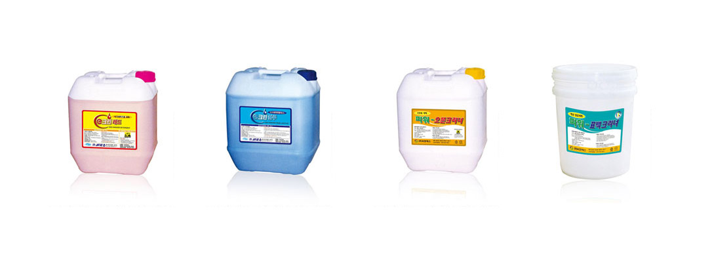

Specifications
세제 및 린스 제품 특징
세제/린스
피닉스 추천 식기세척기 전용 세제와 린스
식기세척기 전용세제가 아닌 저가의 일반세제는 세제 성분 농도가 낮아 세척력이 떨어지고 제품 고장 원인이 될 수 있으므로 반드시 식기세척기 전용 제품을 사용하여 주십시오.
(주)피닉스에서는 식기세척기의 품질을 유지하기 위해 엄선된 세제류만을 공급하고 있습니다.
| 구분 | 제품명 | 특성 | 용도 |
|---|---|---|---|
| 자동식기세척기 전용세제 |
e 크린 레드 |
포장규격 : 18.75L • 보급형 고농축 액체 세제 • 연수와 경수에서도 강력한 세척력 • 금속보호 성분 함유로 부식·침식 방지 • 식기세척기 내 스케일 형성 최소화 |
식기세척기 전용 |
| 자동식기세척기 전용린스 |
e 크린 블루 |
포장규격 : 18.75L • 보급형 고농축 액체 린스 • 우수한 원료만을 사용한 환경친화적인 제품 • 건조력이 뛰어나며 식기 자체의 광택 유지 |
식기세척기 전용 |
| 업소용 주방세제 |
파워-오븐 크리너 |
포장규격 : 18.75L • 오븐, 그릴, 렌지, 주방기구 등의 탄화물 제거 • 세척 후 원래의 색상과 광택 유지 |
주방 기구 주방기구 별도 세척 |
| 담금세제 | 파워-포백 크리너 |
포장규격 : 18.75L • 자동식기세척기 전용 규격에 적합 • 보건복지부 1종 세척제로 분류 • 식기류 예비 세척·담금용 • 산소계 담금세제로 표백효과 우수 • 냄새가 없어 쾌적한 주방 환경 |
세척 전 식기를 물과 혼합하여 담아 세제 효과 높임 |
제품 이미지
